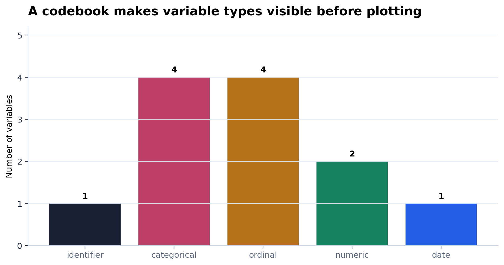

Inspect
Một dòng nghĩa là gì?
What does one row mean?
Một figure tốt bắt đầu từ một bảng có row meaning rõ và một codebook đủ để người đọc tin.
A good figure begins with clear row meaning and a codebook strong enough for readers to trust.
Một dòng nghĩa là gì?
What does one row mean?
Mỗi biến có type và role nào?
What type and role does each variable have?
Wide columns trở thành tidy rows.
Wide columns become tidy rows.
Caption nêu unit sau khi reshape.
Caption names the unit after reshaping.
0-100? rubric? self-report?
pre/post, date, semester, policy year?
activity, class, country, learner type?
| learner_id | pre_vocab | post_vocab | pre_speaking | post_speaking |
|---|---|---|---|---|
| L001 | 42 | 63 | 38 | 58 |
| L002 | 45 | 66 | 41 | 61 |
Một dòng là một learner. Nhưng skill và time đang bị giấu trong tên cột.
One row is one learner. But skill and time are hidden inside column names.
| learner_id | skill | time | score |
|---|---|---|---|
| L001 | vocabulary | pre | 42 |
| L001 | vocabulary | post | 63 |
| L001 | speaking | pre | 38 |
| L001 | speaking | post | 58 |
Một dòng bây giờ là một learner, một skill, một time point.
One row is now one learner, one skill, and one time point.
learner_id, segment_id
activity_group, country
CEFR, pre/post, Likert
score, minutes, rate

| variable | type | role | paper note |
|---|---|---|---|
| cefr_start | ordinal | baseline proficiency | Do not average CEFR labels. |
| time | ordinal | measurement time | Created from pre/post columns. |
| score | numeric | outcome | Comparable within skill. |
vocab = wide.melt(
id_vars=["learner_id", "activity_group"],
value_vars=["pre_vocab_score", "post_vocab_score"],
var_name="measure_time",
value_name="score"
)
Sau đó ta tách `measure_time` thành `time` và `skill`.
Then we split `measure_time` into `time` and `skill`.
16 dòng: mỗi dòng là một learner.
16 rows: each row is one learner.
64 dòng: mỗi dòng là learner-skill-time.
64 rows: each row is learner-skill-time.

| wide columns | tidy variables | figure |
|---|---|---|
| gross_enrollment_rate, completion_rate, student_teacher_ratio | indicator_name, indicator_value | country-year comparison |
Each row in the analysis table represents one learner, one skill, and one time point.
Câu này giúp người đọc hiểu ngay figure đang summarize cái gì.
This sentence tells the reader exactly what the figure is summarizing.
CEFR, Likert, pre/post need care.
Raw row and tidy row are confused.
Reader cannot interpret categories.
Raw row meaning
8+ variables
Tidy long table
Caption + Methods note